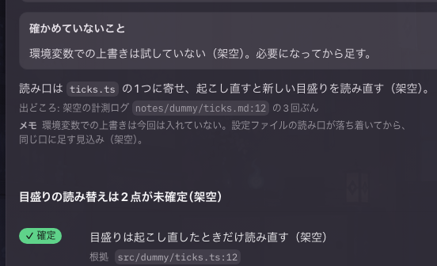
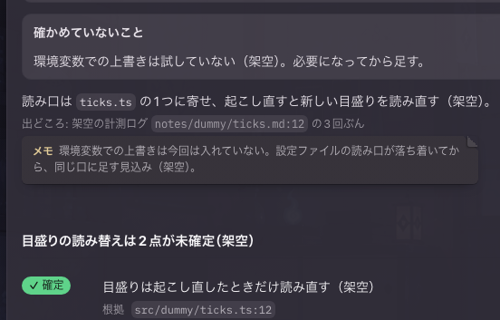
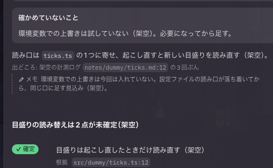
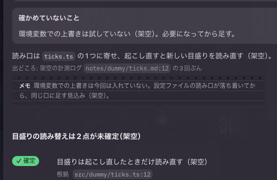

レポートのメモをメモらしく見せる — 3案
今のメモは「出どころ」と同じ欄外注の小さな灰の字で、太字の「メモ」の語だけが違う。3案とも、変えるのは「メモ」のラベルを持つ欄外注だけで、出どころの行・情報・注意などの Note は変えない。

今: 出どころの行と同じ字の大きさと色。「メモ」の語の太さだけで見分ける

案A 角を折った紙片（推奨）: 生成りに寄せた薄い地と右上の折り返しで、紙を貼った覚え書きと分かる。新しい色は「メモ」の語の生成りだけ

案B 鉛筆の書き込み: 地を持たず、点線の縦罫と鉛筆の印。いちばん控えめで、本文の邪魔をしない

案C 罫線のノート片: 行に合わせた横罫と綴じ穴の列。ノートらしさは強いが、上端の穴の列が点線の区切りに見える